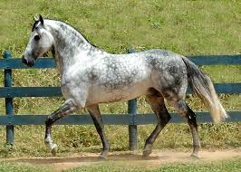

Puro Manga Larga Marchador: Uma Visão Geral
1. Origem
História: Desenvolvido no Brasil no século XVIII.
Ancestrais: Resulta do cruzamento entre cavalos de origem ibérica (principalmente andaluzes e lusitanos) e raças locais.
Objetivo: Criar um cavalo de sela ágil, confortável e resistente para o trabalho no campo.
2. Características Físicas
Altura: Geralmente entre 1,45 e 1,60 m na cernelha.
Constituição: Corpo robusto, musculoso e bem proporcionado.
Cabeça: Cabeça média, com perfil ligeiramente convexo.
Membros: Membros fortes e bem angulados, com cascos resistentes.
3. Andamento
Marcha única, que se destaca pela suavidade e conforto.
Permite um deslocamento eficiente e de longa distância, sendo ideal para passeios e trabalho no campo.
Possui uma cadência rítmica que reduz o impacto durante a cavalgada.
4. Temperamento
Geralmente dócil, tranquilo e amigável.
Fácil de manejar e adestrar, adequado para cavaleiros iniciantes e experientes.
Sociável, costuma se dar bem com outros animais.
5. Versatilidade de Uso
Utilizado em diversas atividades, como:
Passeios e cavalgadas, Competições de marcha e outros esportes equestres.
Trabalho no campo, incluindo doma e manejo de gado.
6. Treinamento e Adestramento
Rápido aprendizado e boa disposição para exercícios.
Ideal para adestramento em diversas modalidades, incluindo provas de marcha.
7. Saúde e Manutenção
Em geral, são saudáveis e resistentes.
Necessitam de cuidados básicos, como alimentação balanceada, vacinação e desverminação regular.
Importante monitorar a saúde dos cascos e a condição física.
8. Reconhecimento e Registros
Reconhecido pela Associação Brasileira dos Criadores de Cavalo Manga Larga Marchador (ABCMRM).
Existe um registro genealógico que mantém a pureza da raça.
9. Cultura e Tradição
Parte importante da cultura brasileira, especialmente nas regiões Centro-Oeste e Sudeste.
Comumente utilizado em festas, rodeios e competições locais.
10. Impacto e Popularidade
Cada vez mais popular em diversas regiões do Brasil e no exterior.
Crescente participação em competições internacionais e eventos equestres.
CONCLUSÃO
O Manga Larga Marchador é uma raça que se destaca pela combinação de beleza, conforto e versatilidade,
refletindo a rica tradição equestre brasileira. Sua marcha suave, temperamento dócil e adaptabilidade fazem dele uma escolha ideal para amantes de cavalos,
sejam iniciantes ou experientes. Através de sua história e características únicas,
o Manga Larga Marchador continua a encantar e a desempenhar um papel significativo no mundo equestre.
Página inicial
Puro-sangue
Quarto-de-milha